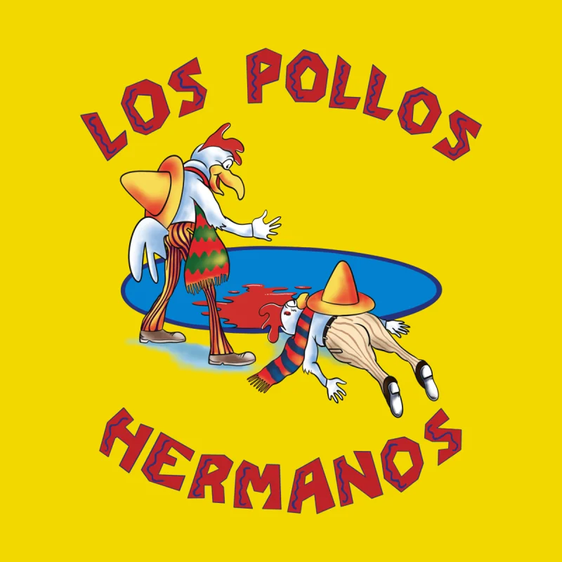
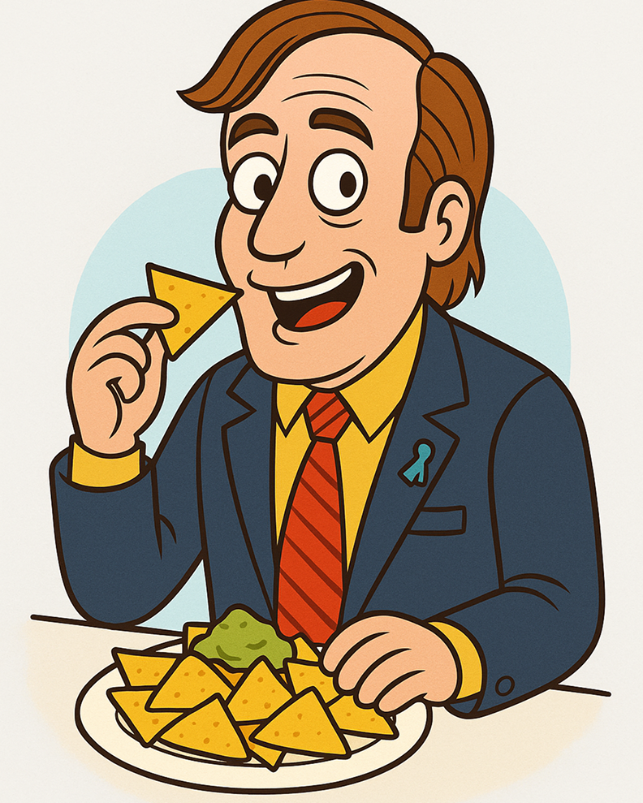
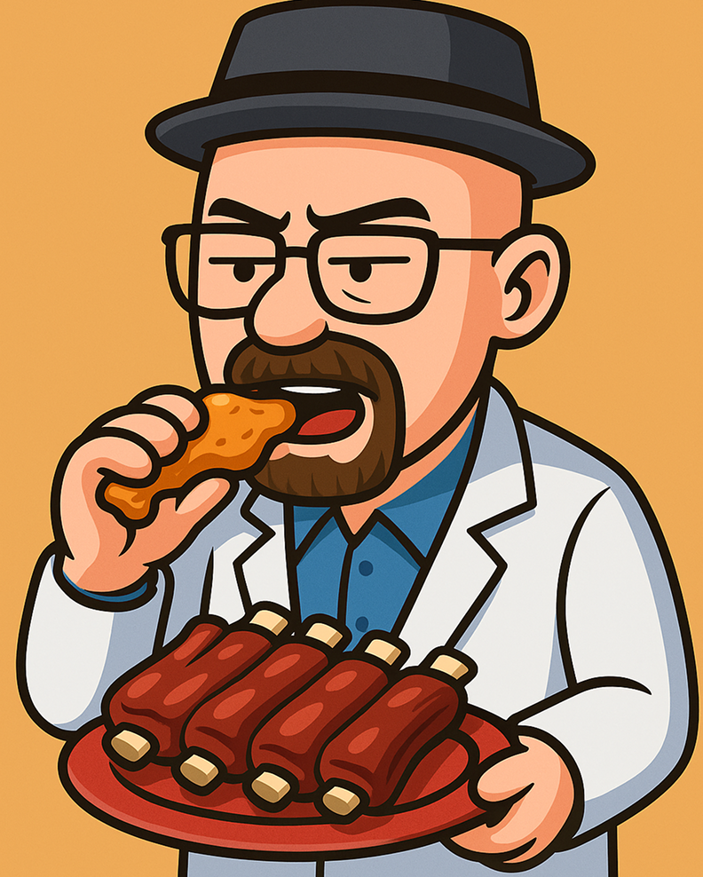
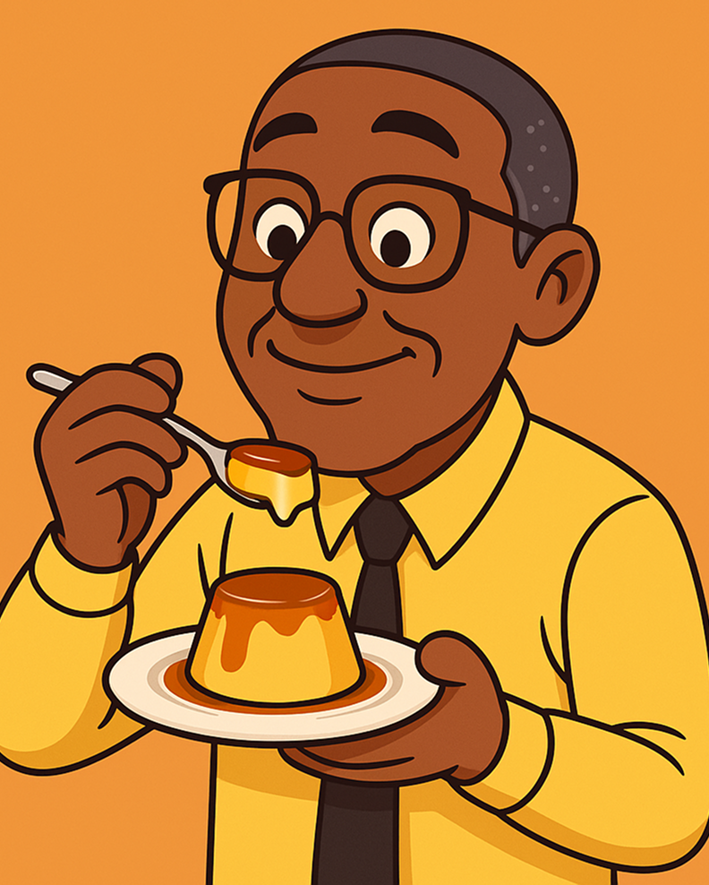

Ejercicio 01
Los pollos hermanos
El sabor que hace que hasta Heisenberg se saque el sombrero.

Entradas
El primer paso a la adicción

Alitas de Crystal Meth – $20
Crujientes y adictivas, servidas con una salsa “azul” de la casa.
Nachos Salamanca – $18
Se comen rápido, pero cuidado… siempre hay consecuencias.
Guacamole Better Call Saul – $12
Ideal para empezar la velada con una defensa impecable.
Plato principal
La verdadera ‘cocina’ de Los Pollos Hermanos
Pollo a la Gus Fring – $20
Perfecto, impecable, sin una sola falla.
Ribs al estilo Heisenberg – $22
Tan intensas que parecen cocinadas en un laboratorio de química.
Steak “Say My Name” – $20
Jugoso, potente y servido con respeto absoluto.

Postres & bebidas
Para terminar la jornada como un capo del cartel

Flan del Desierto – $40
Suave, dorado y con un caramelo tan dulce que parece cocinado bajo el sol de Albuquerque.
Café Lalo Salamanca – $30 – $22
Fuerte, con un “golpe” inesperado al final.
Whisky Pollos Hermanos – $90
Tan suave que hasta Mike se tomaría uno después del turno.